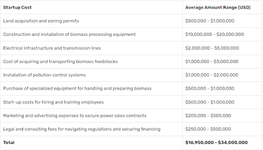

Current global market size for the bio-energy sector, and growth predictions are made for the next decade
|
Factual
Estimated at $116.5 billion in 2021, the global bioenergy market is projected to grow at a compound annual growth rate (CAGR) of 7.7% from 2022 to 2030, when it is predicted to reach $229 billion. According to Precedence Research, the market will expand at a compound annual growth rate (CAGR) of 7.50% from 2023 to 2032, reaching $256.42 billion. With a predicted growth rate of 7.30% between 2023 and 2032, the size of the U.S. bio-energy market was estimated at US$ 32.38 billion in 2022 and is projected to reach approximately US$ 65.19 billion by 2032. The bioenergy market was led by North America in 2022. In the North American region, the United States dominated the bioenergy market. The growth of the energy sector, increasing investments in energy and infrastructure projects, and growing initiatives by major industry players to support the bioenergy market are some of the factors contributing to the bioenergy market's expansion in the North American region.
Adoption rate of bio-energy compared to other renewable energy sources globally
|
Directional
With over 6% of the world's energy supply and 55% of renewable energy coming from modern bioenergy, it is currently the largest renewable energy source. According to the Net Zero Emissions by 2050 (NZE) Scenario, bioenergy will replace fossil fuels at a rapid rate by 2030. The use of contemporary bioenergy is trending upward, having grown by roughly 3% annually on average between 2010 and 2022. In order to meet the NZE Scenario, which calls for an 8% annual increase in deployment between 2022 and 2030, more work must be done to expedite the deployment of modern bioenergy while also making sure that the production of bioenergy has no negative impact on society or the environment.
Emerging technologies are expected to influence the growth of bio-energy jobs in the near future
|
Predictive
Advanced bio-refining converts biomass into various fuels and products, requiring expertise in chemical engineering, biotechnology, and bioprocess engineering. Consolidated Bioprocessing (CBP) simplifies biofuel production by integrating fermentation and biomass breakdown, reducing costs and increasing efficiency. Algal biofuels are growing rapidly, creating new opportunities through closed-loop systems and genetic engineering. Algal biology and bioengineering specialists are needed for these methods. As the bioenergy sector expands, sustainable biomass logistics and supply chain management are crucial. Innovations like co-locating bio-refineries with farms could reduce transportation distances, creating job opportunities in supply chain management, logistics, and sustainability planning.
The average start-up and operational costs associated with becoming a bio-energy operator
|
Factual
Depending on the operation's location and business model, starting a biomass energy company can have varying start-up costs. Building and running biomass power plants is one popular strategy, but it requires a sizable upfront investment in equipment and infrastructure. The projected average start-up costs for a biomass power plant in the US are listed below.

It is significant to remember that these estimates can differ significantly based on location, business model, and other factors. They are based on industry averages. Budget planning should also take ongoing operating costs like fuel and maintenance into consideration. Launching a biomass energy business successfully requires careful thought and preparation.
Considering the current economic trends, is investing in a career as a bio-energy operator financially sustainable in the long term
|
Evaluative
The bio-economy, a sector focused on harnessing biological resources for various industries, is gaining traction as a way to transition to a more sustainable future. This shift is not only a moral imperative but also a strategic move for investors seeking to have a positive impact on the environment while earning long-term financial returns. The bio-revolution includes agriculture, forestry, fisheries, and renewable biological resource production. As the bio-industrial revolution begins, investors and financiers have a unique opportunity to contribute to a greener future while supporting innovative bio-industries.
Recent trends in financing bio-economy initiatives show increased interest from traditional financial institutions and impact investors. Bio-industries have the potential to address global challenges such as climate change and resource depletion, leading to increased funding for research and development and commercial-scale projects aimed at expanding sustainable practices.
The rapid advancement of biotechnology, such as genetic engineering, synthetic biology, and precision agriculture, is driving the bio-economy's surge. Attending bio-economy-focused events offers investors and financiers a unique opportunity to stay updated on emerging technologies, market trends, and investment opportunities. Collaboration is key in driving the bio-revolution, as investors gain access to a wide range of expertise and contribute to comprehensive solutions to environmental challenges.
Specific qualifications and skills are required to become a bio-energy operator
|
Factual
Plant operators are entry-level positions in the bioenergy industry's infrastructure career sub-sector. Job seekers with an infrastructure background or students in trade or vocational schools may be interested in this type of entry-level bioenergy position.
Plant operators use equipment—including heavy construction, maintenance, and industrial machines—to control chemical reactions, process intermediate products, and move feedstock through a plant efficiently. People in these positions may have internships or entry-level positions in bioenergy plant operations.
Let’s explore what’s needed:
Education and Training:
- A high school diploma is typically required to start in this field.
- Some employers may prefer candidates with an associate’s degree, trade school certification, or relevant apprenticeship experience.
Skills and Abilities:
- Understand equipment assembly, repair, and installation.
- Operate heavy machinery.
- Interpret technical documents.
- Be reliable and dependable.
- Obtain a Commercial Driver’s License (CDL) if required.
Job Profile:
- Bioenergy operators work in biorefineries, converting biomass into fuels and chemicals.
- Duties include maintaining plant efficiency, fixing machinery, and testing product quality.
- Gain practical experience through internships or entry-level positions
Additional Considerations:
- In South Africa, physical skills, attention to detail, and teamwork are essential.
- Technical knowledge of biomass properties and safety regulations is valuable.
- Some qualifications in biological sciences may also be relevant.
Skills and competencies needed for a career in biofuels
|
Directional
To work in biofuels, you will need to have a solid background in science, engineering, or technology. Depending on your specific role, you may need to understand the chemical, biological, or physical processes involved in converting biomass into fuel, as well as the design, operation, and maintenance of biofuel production systems.
Best practices for securing a job as a bio-energy operator in a competitive market
|
Evaluative
- Meet basic requirements: Before applying, make sure you meet the basic requirements for the job
- Get relevant experience: Employers value experience gained through internships, part-time work, or volunteer work
- Consider an apprenticeship or trade school: Employers prefer candidates with on-the-job training, apprenticeship, or trade school experience
- Network: Attend industry events, connect with professionals, and join online communities
- Create an online portfolio: Showcase your work and projects in a visually appealing portfolio
- Demonstrate adaptability: Show that you can adapt and learn new things